Bienvenue sur la section CSS:
Le css c'est quoi ?
Le css est un language interprété par le navigateur qui sert à mettre en forme une page web.
Le navigateur va "lire" les instructions et appliquer notre "style", une esthétique, à notre page.
Avec le CSS, nous pouvons agir par exemple sur:
- Les couleurs
- Les tailles
- Le placement des éléments sur la page
- Les polices de caractères (font)
- Etc...
Ce qu'il est possible
Avant toute chose, où place t'on notre code CSS ?
- Dans une balise directement grâce à l'attribut "style":
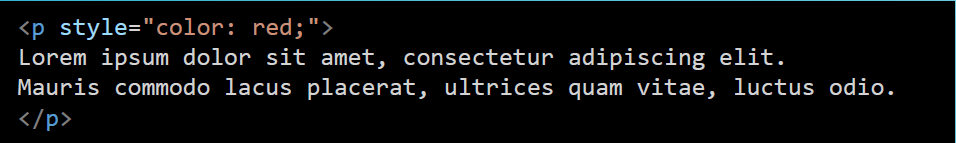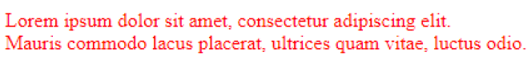
- Dans le "head" grâce à une balise "style":
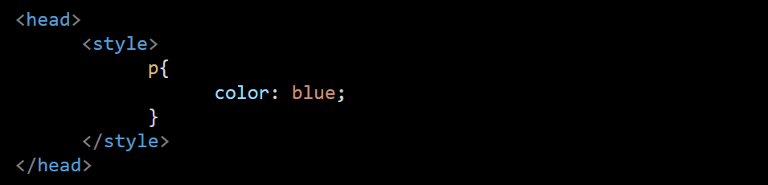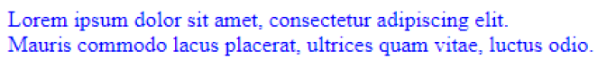
- Dans un fichier ".css" à part:
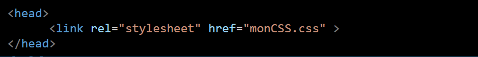
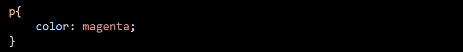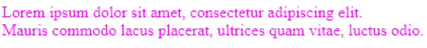
Bonnes pratiques
- Que choisir ?
dans un fichier à part ! car cela à de noubreaux avantages:
- permet une maintenance du code plus simple
- permet d'utiliser le même fichier sur plusieur pages HTML
- Comment ça marche ?
il suffit de lier notre page CSS avec notre page HTML grâce à la balise "link" dans le "head"
bonne pratique
regardons notre code en détails:
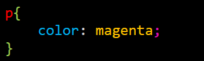
nous avons:
- En rouge:Le sélecteur => Permet de choisir sur qui s'applique le style
- En vert:Les acoolades => Délimite les propriétés pour un élément
- En bleu:La propriété =>Les effets graphique qui vont être appliqués
- En jaune:La valeur =>La valeur (un nombre, une couleur, ...)
- En rose:Le séparateur => Le point vigule";" sert à séparer les propriétés entre elles
Ici, nous appliquons donc la couleurs "magenta" au texte de nos balises "p"
Commentaires
Comme pour le HTML, nous pouvons mettre des commentaires dans code qui ne seront pas interprétés par le navigateur, et qui n'apparaitrons pas sur la page.
Attention, tout ce que vous écrivez en commentaire pourra aussi être lu par n'importe qui !
Pour écrire un commentaire, il faut mettre entre "/*" ouvrante et "*/" fermante comme ceci:
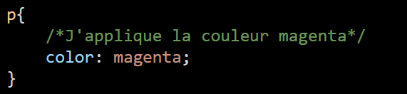
Cascade & Héritage
Mais pourquoi "cascade" dans Cascading Style Sheet ?
- Les feuilles de style sont exécutées dans l'ordre de délcaration:
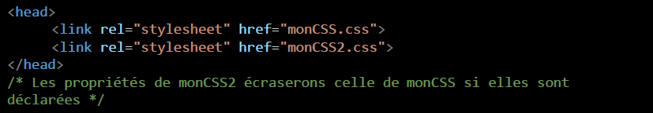
- Les délarations sont aussi exécutées dans l'ordre d'écriture:
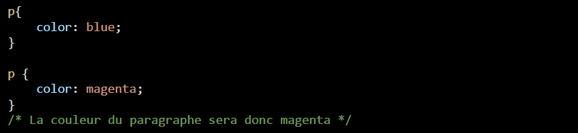
- L'instuction la plus précise sera celle qui sera prioritaire:
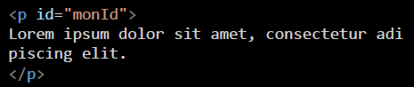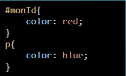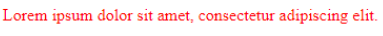
- Certaines propriété hérite du parent vers l'enfant:
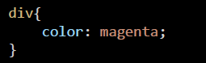
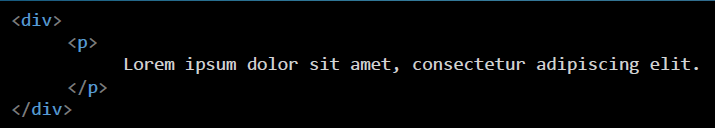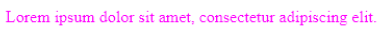
Vocabulaire & Résumé
- On déclare de préférence notre CSS dans un fichier séparé que l'on lie à notre page grâce à la balise "link" qui se situe dans le "head" de la page.
- Notre fichier CSS contient des règles CSS
- CHaque règles CSS contient Une ou plusieurs déclarations qui sont composées D'un propriété et de sa valeur
- On utilise le " : " pour séparer la proprété de sa valeur
- On utilise le " ; " pour séparer les déclarations entre elles
- On utilise les accolade " {} " pour séparer les régles entre elles
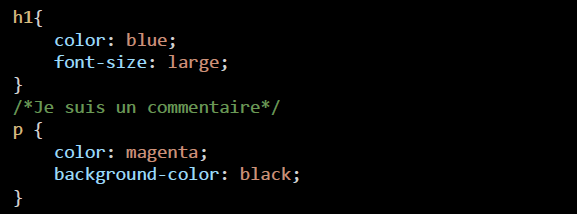